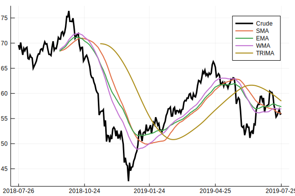

Moving Averages
Example
using Temporal, Indicators, Plots
X = quandl("CHRIS/CME_CL1", rows=252, sort='d')
x = cl(X)
x.fields[1] = :Crude
mafuns = [sma, ema, wma, trima]
m = hcat([f(x, n=40) for f in mafuns]...)
plot(x, linewidth=3, color=:black)
plot!(m, linewidth=2)
Reference
Indicators.alma — Method.alma{Float64}(x::Array{Float64}; n::Int64=9, offset::Float64=0.85, sigma::Float64=6.0)::Array{Float64}Arnaud-Legoux moving average (ALMA)
Indicators.dema — Method.dema(x::Array{Float64}; n::Int64=10, alpha=2.0/(n+1), wilder::Bool=false)::Array{Float64}Double exponential moving average (DEMA)
Indicators.ema — Method.ema(x::Array{Float64}; n::Int64=10, alpha::Float64=2.0/(n+1.0), wilder::Bool=false)::Array{Float64}Exponential moving average (EMA)
Indicators.hma — Method.hma(x::Array{Float64}; n::Int64=20)::Array{Float64}Hull moving average (HMA)
Indicators.kama — Method.Kaufman adaptive moving average (KAMA)
Indicators.mama — Method.mama(x::Array{Float64}; fastlimit::Float64=0.5, slowlimit::Float64=0.05)::Matrix{Float64}MESA adaptive moving average (MAMA)
Indicators.mma — Method.mma(x::Array{Float64}; n::Int64=10)::Array{Float64}Modified moving average (MMA)
Indicators.sma — Method.sma(x::Array{Float64}; n::Int64=10)::Array{Float64}Simple moving average (SMA)
Indicators.swma — Method.Sine-weighted moving average
Indicators.tema — Method.tema(x::Array{Float64}; n::Int64=10, alpha=2.0/(n+1), wilder::Bool=false)::Array{Float64}Triple exponential moving average (TEMA)
Indicators.trima — Method.trima(x::Array{Float64}; n::Int64=10, ma::Function=sma, args...)::Array{Float64}Triangular moving average (TRIMA)
Indicators.wma — Method.wma(x::Array{Float64}; n::Int64=10, wts::Array{Float64}=collect(1:n)/sum(1:n))::Array{Float64}Weighted moving average (WMA)
Indicators.zlema — Method.zlema(x::Array{Float64}; n::Int=10, ema_args...)::Array{Float64}Zero-lag exponential moving average (ZLEMA)